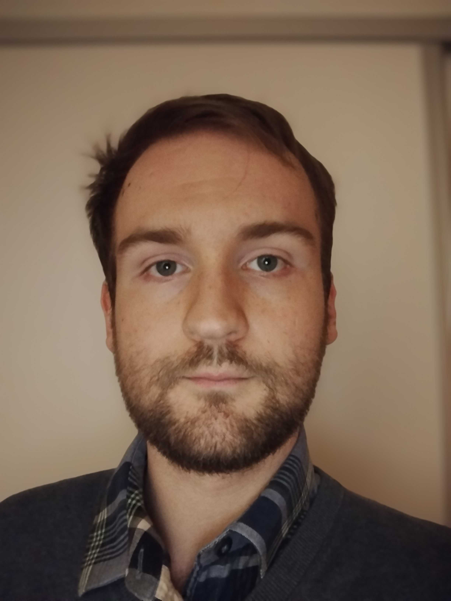
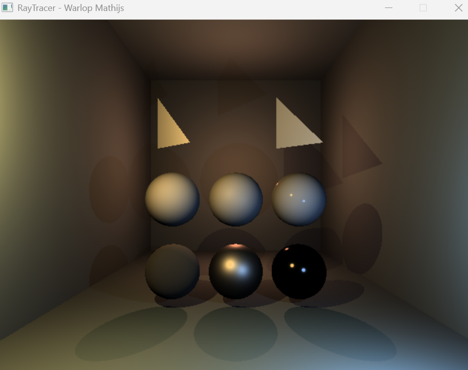
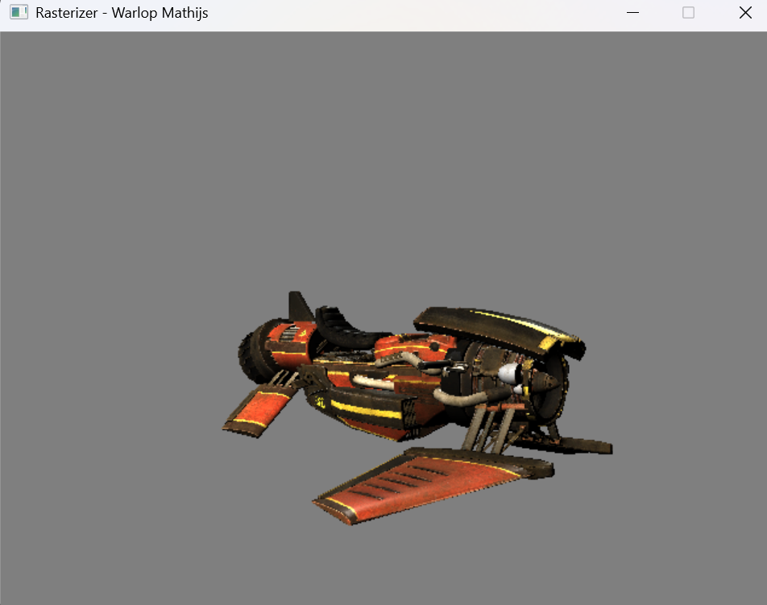
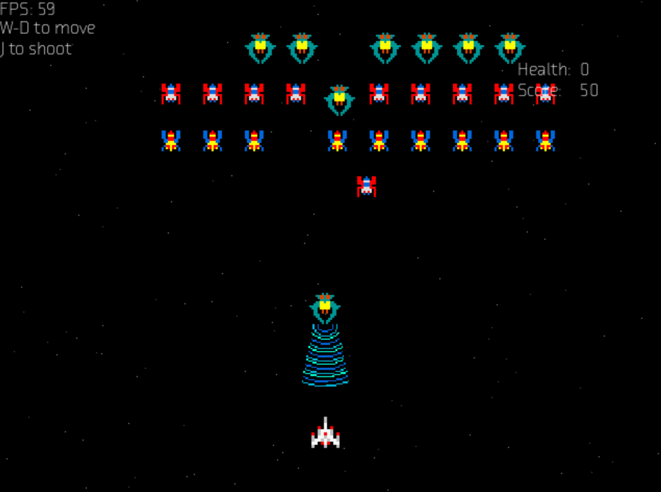

Game Development student at DAE (Howest), focused on building gameplay systems, interactive tools, and real-time applications using C++ and Unity.

I’m a Game Development student focused on building interactive systems and gameplay experiences.
I mainly work with C++, SDL, and Unity and enjoy solving technical challenges and improving my understanding of real-time systems.
Rather than specializing too early, I aim to build a strong foundation across gameplay programming, rendering, and tools development.
During my internship at the National Lottery, I developed Unity WebGL training applications and integrated them into Flowsparks using SCORM.
This gave me hands-on experience with real users, structured workflows, and production-ready tools.
Developed interactive Unity WebGL applications for internal training and deployed them via Flowsparks (SCORM).
Worked on gameplay systems, UI, localisation workflows, and dialogue systems.
Collaborated in a SCRUM team with daily stand-ups and iterative development.
Two training applications developed during my internship.
Food Impact: A supermarket game focused on sustainability and environmental impact of product choices.
Sales Star: A simulation that trains employees in customer interaction and store presentation.
A VR project developed at DAE. Focused on interaction systems and gameplay programming within a team environment.
A cooperative tower-climbing game created in Unity. Implemented player movement, abilities, and UI systems.
🎮 Play on itch.io

Graphics programming projects demonstrating understanding of the rendering pipeline, lighting, and low-level rendering techniques.
View on GitHub
Recreation of the classic Galaga game with player movement, enemy waves, and shooting mechanics.
View on GitHub